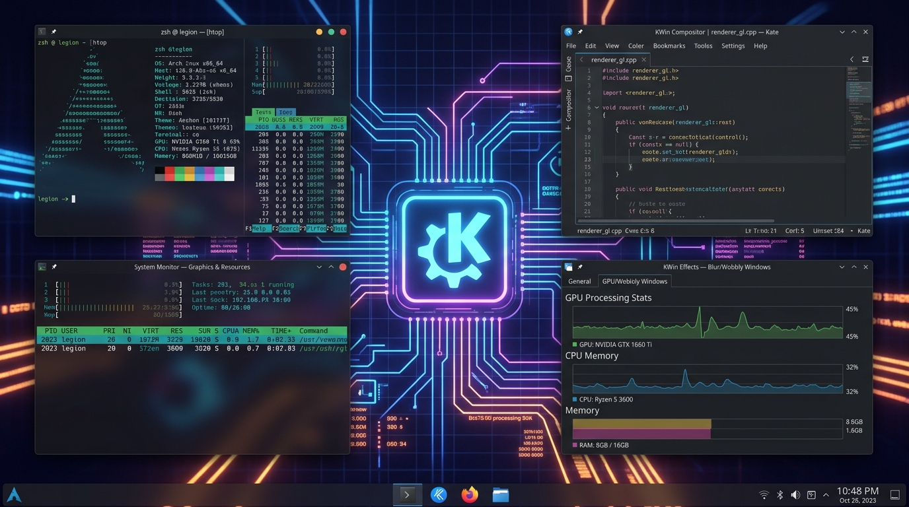
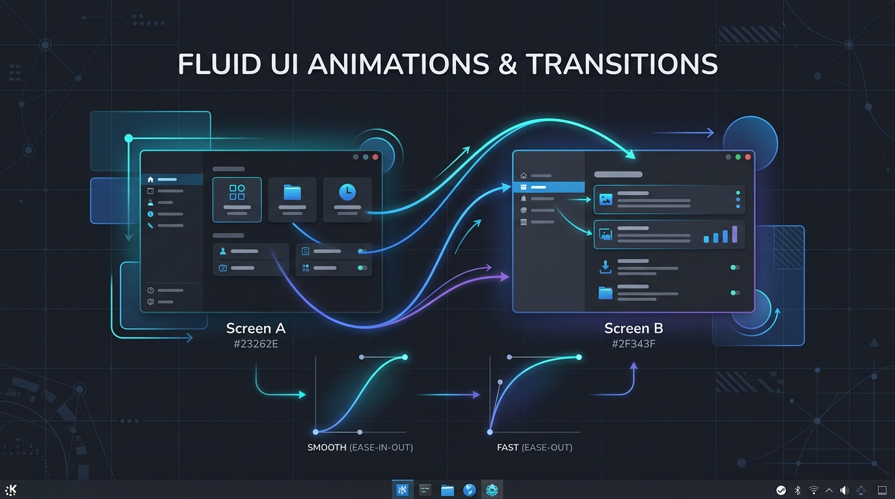

KDE continúa evolucionando Plasma con una serie de mejoras arquitectónicas profundas que afectan tanto al núcleo del compositor KWin como a la experiencia interactiva diaria del escritorio. En esta tanda de desarrollo, la simplificación del renderizado gráfico y el pulido de micro-animaciones toman un rol protagónico.
KWin simplificado y OpenGL ES
Uno de los cambios de mayor envergadura estructural consiste en el uso de OpenGL ES como única API gráfica interna por defecto para el compositor. Históricamente, KWin mantenía de forma paralela dos motores de renderizado independientes: uno basado en la especificación OpenGL de escritorio tradicional y otro optimizado para sistemas embebidos y móviles mediante OpenGL ES.

Al unificar todo bajo OpenGL ES, el equipo de desarrollo de KDE reduce sustancialmente la deuda técnica. Esto permite que el compositor sea más liviano, tenga rutas de renderizado más directas y disminuya la probabilidad de errores visuales causados por diferencias entre drivers. Para el usuario, esto se traduce en una mejora marginal en el consumo de memoria de video y un rendimiento óptimo en arquitecturas portátiles y GPUs de bajo consumo.
«KWin ya no necesita mantener dos rutas de renderizado independientes. Consolidar el compositor sobre OpenGL ES garantiza un comportamiento predecible bajo Wayland y un mantenimiento de código viable a largo plazo.»
Animaciones más fluidas
El refinamiento estético de Plasma no se detiene en los componentes de bajo nivel. KWin ha recibido ajustes en sus curvas de aceleración interactiva, ofreciendo transiciones más naturales y fluidas durante las notificaciones de sistema y la apertura de ventanas.

Estas nuevas curvas calculan de manera física las velocidades de entrada y salida (easing function) reduciendo las transiciones bruscas. Esta fluidez responde a los principios de KDE sobre una interfaz que se sienta al mismo tiempo responsiva y elegante, adaptándose con delicadeza al hardware del usuario y respetando las configuraciones de accesibilidad si se solicita reducir el movimiento.
Seguridad reforzada y gestión de launchers
Otro de los aspectos cubiertos en esta actualización es la ciberseguridad a nivel de sistema. El gestor de tareas de Plasma ahora implementa una validación más estricta para los accesos directos y archivos descriptivos de aplicaciones (.desktop).
Esta medida preventiva neutraliza un vector común de vulnerabilidad, donde archivos descriptores locales modificados fraudulentamente podían ejecutar comandos en terminal imitando el icono de una aplicación inocua o del sistema.
Conclusiones
Plasma sigue consolidándose como la alternativa predilecta para usuarios que buscan potencia, control estético y una plataforma robusta construida con criterios modernos. Con estas integraciones en KWin y la continua simplificación de APIs, el escritorio está mejor preparado que nunca para afrontar el estándar de Plasma 6 y superiores.